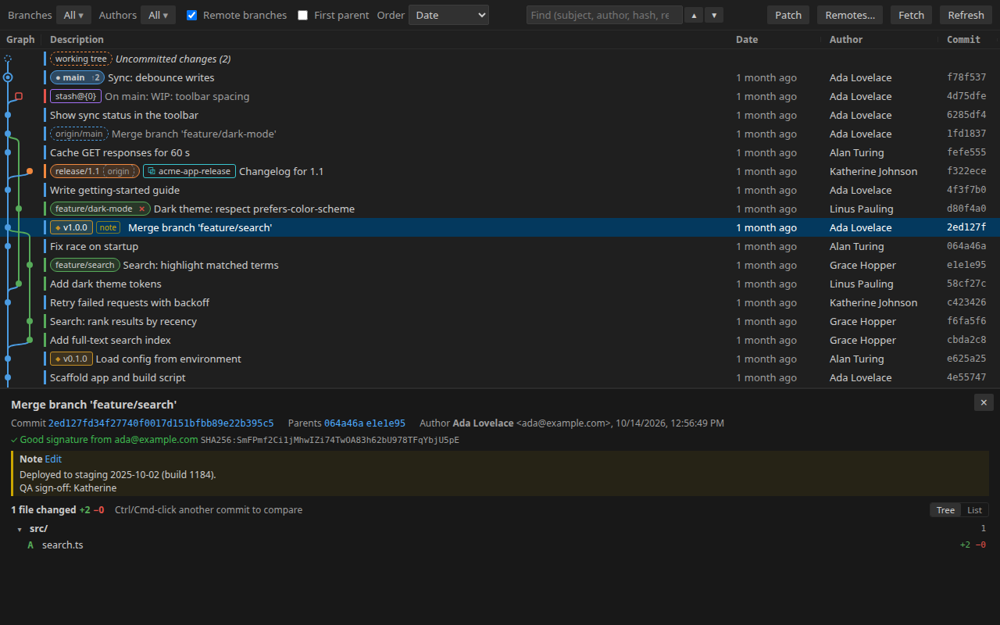
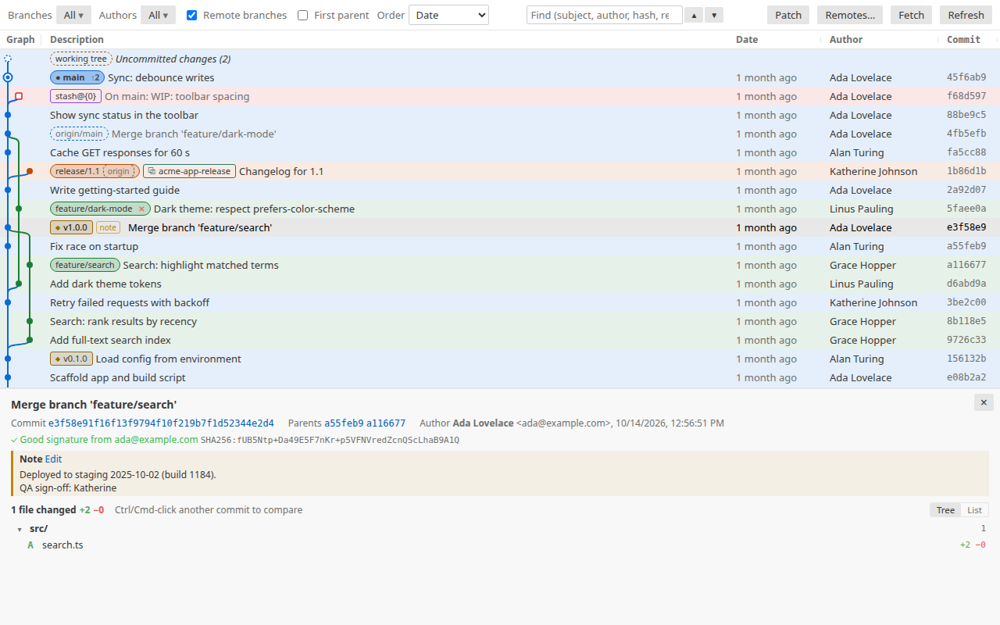

Git graph branch colors in VS Code
In most git graphs a branch has no color of its own. The tool hands out colors to columns as lines start, so main can be blue in one screenshot and pink in the next, and a commit far from the graph is hard to place. This page shows what each tool lets you change, with the exact setting names, and how to give a branch name a color that stays.
Quick answers
| I want to… | Use |
|---|---|
Change the line colors of git log --graph | git config --global log.graphColors "red,blue,#ff8800" |
Change the color of branch names in git log | git config --global color.decorate.branch "magenta bold" |
| Change the 5 line colors of VS Code’s Source Control Graph | workbench.colorCustomizations → scmGraph.foreground1…scmGraph.foreground5 |
| Change the line colors in the Git Graph extension | Setting git-graph.graph.colours (a list, used in turn) |
Make main always red and every feature/* branch green | Mergeline: setting mergeline.branchColors, or right-click a branch → Set branch colour… |
| See which branch a commit is on without following the line | Mergeline: mergeline.rowColors "stripe" or "tint" |
We ran the git commands with git 2.53 in a throwaway repository and read the VS Code color names from VS Code 1.147’s own files and the extensions’ published package.json (2026-11-20).
Why a branch changes color
Git and most graph views pick a color for each line when the line starts, from a fixed list, in turn. The color belongs to the line’s position in the drawing, not to the branch name. Three things follow:
- The same branch gets a different color after a fetch or a new branch, because the lines start in a different order.
- Two unrelated branches can share a color once the list runs out (Git Graph’s default list has 12 colors, VS Code’s built-in graph 5).
- A branch can change color halfway down. Where a branch was merged and its line ends, the commits below it continue in another line, with that line’s color.
A fixed color per branch needs the tool to know which branch a line belongs to: the line that starts at the commit a branch points to.
Colors in git log --graph
git config --global log.graphColors "red,blue" git log --graph --oneline * b7c8a28 merge |\ ← first line red, second blue, then red again | * 40f45c3 two * | c05e940 three |/
log.graphColorsis a comma-separated list used in turn for new lines. Names (red,bold blue) and#rrggbbboth work:#ff8800came out as a 24-bit terminal color. An unknown name is skipped withwarning: ignored invalid color 'nosuchcolor' in log.graphColors.- Branch and tag names in
--decorateoutput have their own keys:color.decorate.branch,color.decorate.remoteBranch,color.decorate.tag,color.decorate.HEAD. Withcolor.decorate.branch "magenta bold",(HEAD -> main)showedmainin bold magenta. - No per-branch line color. Git has no setting that ties a line color to a branch name.
- Colors only appear on a terminal, or with
--color=alwayswhen you pipe the output.
VS Code’s Source Control Graph
The graph in the Source Control view (VS Code 1.147) draws its lines in five theme colors, scmGraph.foreground1 to scmGraph.foreground5 (defaults #FFB000, #DC267F, #994F00, #40B0A6, #B66DFF), and the current, remote and base branch in scmGraph.historyItemRefColor, scmGraph.historyItemRemoteRefColor and scmGraph.historyItemBaseRefColor. Change them in settings.json:
"workbench.colorCustomizations": {
"scmGraph.foreground1": "#4b9ce2",
"scmGraph.historyItemRefColor": "#e5534b"
}
That changes the palette for every repository. It cannot say “develop is blue”.
Git Graph and GitLens
- Git Graph has the setting
git-graph.graph.colours: a list of 12 colors (hex orrgb()) used in turn. A fixed color per branch is its open issue #254 (22 👍, opened February 2020) and #809; Git Graph has had no release since 2021. - GitLens’ Commit Graph draws its lanes in theme colors
gitlens.graphLane1Colortogitlens.graphLane10Color, set the same way throughworkbench.colorCustomizations.
A fixed color per branch in Mergeline
Mergeline is a free, MIT-licensed git graph for VS Code, Cursor and VSCodium. From version 0.17 a branch name or pattern can have its own color, and rows can show the color of their line.
"mergeline.branchColors": {
"main": "blue",
"release/*": "orange",
"feature/*": "green",
"hotfix/*": "#e5534b"
}
- Keys are branch names or patterns where
*matches anything, including/. They apply to local branches and to remote branches under any remote, somainalso colorsorigin/main. If a commit has several branches, the earlier entry wins. - Values are palette names that adapt to light and dark themes (
blue,red,green,yellow,purple,cyan,pink,lime,orange,grey), or#hex,rgb()orhsl(). Anything else is skipped, with a warning naming the entry. - What gets the color: the line that starts at the branch’s newest commit, down its first parents (the commit it was made on top of) until it merges into another line, and the branch’s badge. Branches you have not colored keep cycling through the palette.
- Without editing JSON: right-click a branch → Set branch colour… (palette, or Custom colour… for a hex value), or Set colour of all feature/… branches…; Automatic removes it.
- With pinned branches (
mergeline.pinnedBranches, on by default formain,masteranddevelop), the pinned column takes the branch’s color, somainis one straight line in one color.

main blue, release/* orange, feature/* green, with "mergeline.rowColors": "stripe".Color whole rows by branch
The setting mergeline.rowColors (also in the column header’s right-click menu) colors every row by the line its commit is on, so the branch is visible next to the message, far from the graph: "stripe" draws a thin bar at the left of the description, "tint" shades the whole row. Selection, hover and find highlights still show on top.

"mergeline.rowColors": "tint" in a light theme.Mergeline is not on the VS Code Marketplace yet. Download the .vsix from GitHub and run Extensions: Install from VSIX… (full steps).
FAQ
Why is my main branch a different color every time I open the graph?
Colors go to lines in the order they start, so a new branch or a fetch shifts them. Give main a fixed color (Mergeline’s mergeline.branchColors) or pin it to its own column.
Can my whole team use the same branch colors?
Yes. Put mergeline.branchColors in the repository’s .vscode/settings.json. Once the setting is there, the branch menu writes changes there too, instead of to your user settings.
Does this change my git config?
No. Mergeline’s colors are VS Code settings. git log --graph in a terminal keeps using log.graphColors.
Why does a feature branch’s color stop partway down?
Below the commit where the feature branch started, its history is the history of the branch it came from, drawn in that branch’s line and color.
Related: visualize git branches in VS Code, a git flow graph with main and develop pinned, filter the graph by branch and git log --graph.